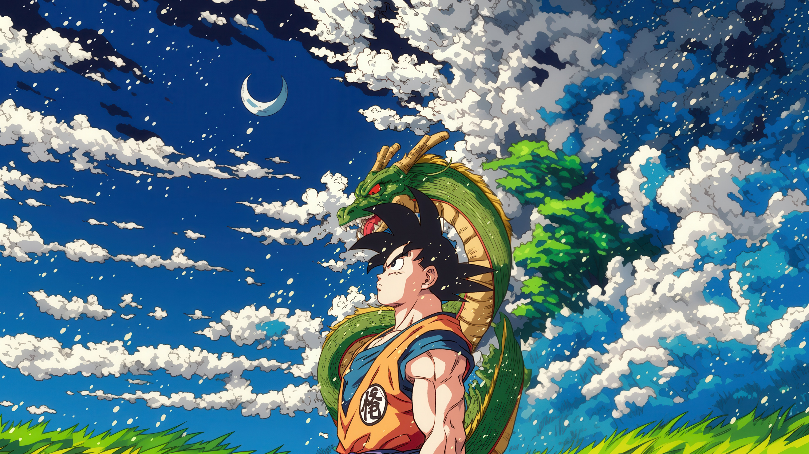

Step into the world of endless possibilities with AniXNobi. From keeping track of your watchlist to discovering hidden gems and the latest hits, AniXNobi is your trusted companion. Designed for every anime lover, it brings simplicity, organization, and excitement to your anime experience. Start your journey today and explore anime like never before!
Scroll Down
Embark on your Journey to Track and Watch these Most Recommended Animes of All Time
That Time I Got Reincarnated as a Slime

Dragon Ball Z
One Piece
Naruto Shippuden
Demon Slayer
What Services We Offer?
Keeping up with your favorite anime series has never been easier. Our Anime Tracker is designed to help you stay organized and immersed in your anime journey, ensuring you never lose track of where you left off or what to watch next. Whether you're a casual viewer or a dedicated fan, this tool is your ultimate companion for a seamless and enjoyable anime experience.
Never lose track of your anime progress again! Our episode logging feature allows you to mark episodes as watched, in-progress, or on hold.Whether you're binge-watching a new release or slowly catching up on a classic, this feature ensures you always know where you left off.
Organize your anime journey like a pro with our customizable watchlist feature. Create multiple lists for different moods, genres, or seasons—like "Top Priority," "Classics to Watch," or "Seasonal Favorites." You can easily add, remove, or reorder shows, and even set reminders for when new episodes drop.
Stay motivated and organized with our detailed progress tracking system. Visualize your anime journey through intuitive stats like completion percentages, total episodes watched, and hours spent watching.
Make your Anime Tracker truly yours with a fully customizable dashboard. Choose which widgets and stats to display, such as your watchlist, progress tracking, seasonal updates, or community activity.